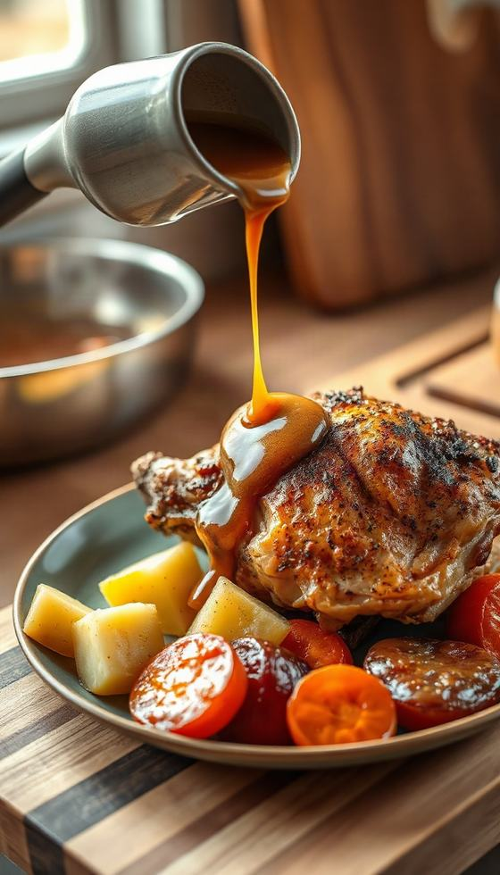
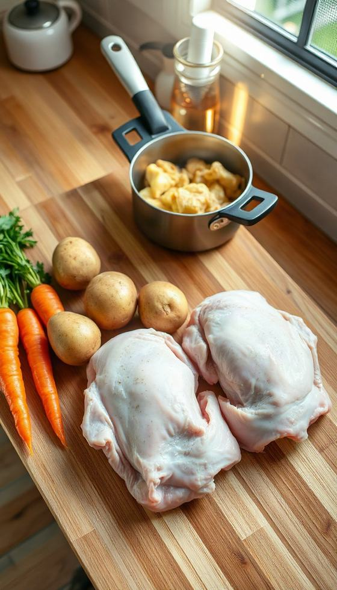
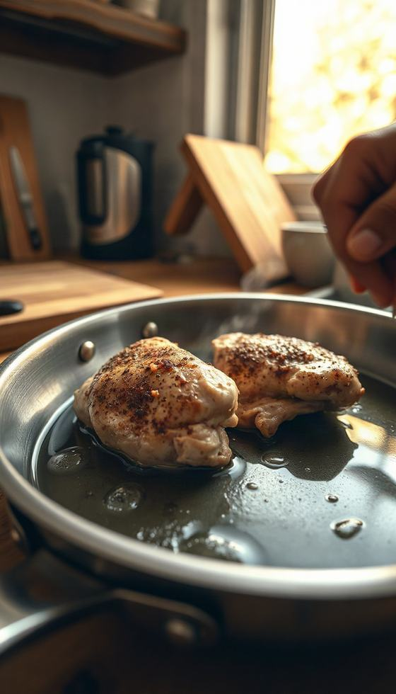
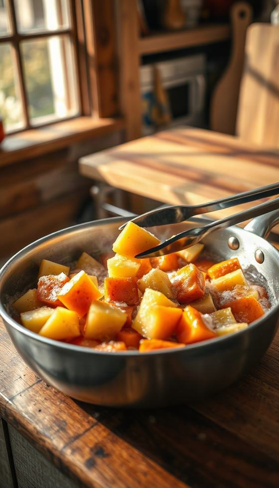

Takeout Copycat
Rotisserie-Style Skillet Chicken Thighs: Mini Thanksgiving Dinner for 2
About $4.60* · 2 servings · 20 min
*Prices are estimates and may differ from what you pay. How we price recipes
Two chicken thighs, two potatoes and two carrots became a full mini Thanksgiving dinner: rotisserie-style chicken, butter-crisped potatoes, glazed carrots and pan gravy, $2.30 a plate.




Ingredients
- 300 g potatoes (2 medium), cut in 2 cm cubes
- 150 g carrots (2 medium), sliced into 1 cm coins
- 2 tbsp water (for microwaving the vegetables)
- 250 g boneless skinless chicken thighs (2 thighs)
- Rotisserie rub: 1 tsp paprika, 1/2 tsp garlic powder, 1/2 tsp onion powder, 1/2 tsp dried thyme, 1/2 tsp salt, 1/4 tsp black pepper, 1/2 tsp sugar
- 1 tbsp canola oil
- 1 tbsp butter
- 1 tsp sugar (for the carrot glaze)
- 1 tsp all-purpose flour
- 1/2 chicken bouillon cube dissolved in 3/4 cup hot water
Steps
- Put the cubed potatoes and carrot coins in a microwave-safe bowl with 2 tbsp water. Cover with a plate and microwave on high for 6 minutes, until a fork just slides in. Drain.
- While that runs, pat the chicken thighs very dry with paper towel. Mix the rotisserie rub and press it all over both sides.
- Heat 1 tbsp canola oil in a large skillet over medium-high heat until it shimmers. Lay the thighs in smooth side down and leave them alone for 5-6 minutes until deep brown. Flip and cook 5 more minutes, until the thickest part reads 74°C (165°F). Move the chicken to a plate to rest.
- Lower the heat to medium. Add the butter to the same pan, then the drained potatoes and carrots in one layer. Fry 4 minutes, turning once, until golden. Sprinkle 1 tsp sugar over the carrots for the last minute so they glaze, then spoon the vegetables onto two plates.
- Sprinkle 1 tsp flour into the pan drippings and stir 30 seconds. Whisk in the bouillon water, scraping up the browned bits, and simmer 1-2 minutes until it coats a spoon.
- Slice or leave the thighs whole, set one on each plate with the potatoes and carrots, and pour the hot gravy over the chicken.
What you'll need
Gear links go to Amazon (Amazon.ca, or Amazon.com in the US). As an Amazon Associate I earn from qualifying purchases, at no extra cost to you.
Watch the videoMore $5 recipes
About the prices: they're estimates, not quotes. Since Nov 2026 they're based on Statistics Canada's monthly average retail prices where an item is listed (Open Government Licence - Canada), otherwise on typical Canadian grocery prices, and count only the amount of each ingredient used, not whole packages. What you pay will vary by store, location, brand, sales, taxes and date, and any pantry staples you need to buy will add to it. Recipe visuals and narration are AI-generated.